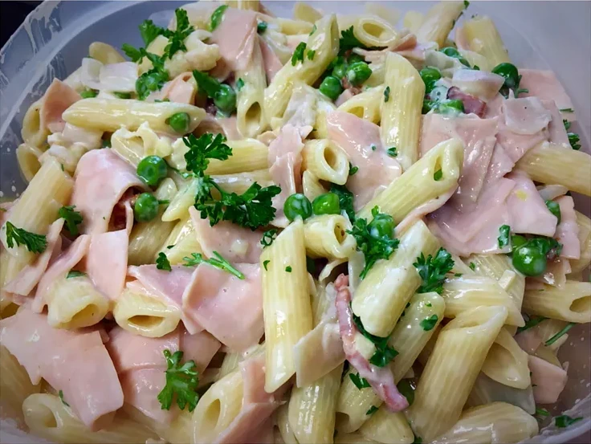

Home
Pasta Carbonara

Description
This rich pasta toss is great for everyday dinners or special occasions. I can come home from work and throw this dish together in a half hour.
Ingredients
- 3 cups rigatoni pasta
- 6 slices bacon, diced
- 2 cloves garlic, minced
- 1 ¼ cups milk
- 1 (8 ounce) package cream cheese, cut into cubes
- ½ cup butter, softened
- ½ cup freshly shredded Parmesan cheese
- ¼ cup fresh green peas
- ¼ cup diced cooked ham
Steps
- Heat oil in a 6-quart pot over medium-high heat. Add beef and saute until brown, 5 to 7 minutes. Add onions and cook until starting to soften, about 3 minutes. Add ketchup and Worcestershire sauce. Stir to coat. Add cayenne pepper. Pour in water to cover mixture by 1 or 2 inches. Add carrots and bouillon.
- Simmer, skimming fat off the surface of the broth as needed, for 30 minutes. Add potatoes. Stir in 1 package of curry roux and let dissolve; add remaining curry as needed to achieve desired thickness. Continue simmering until beef and vegetables are tender, about 30 minutes more.